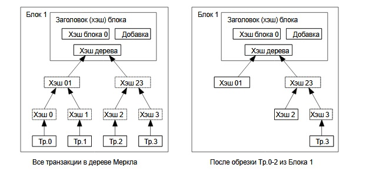

7. Экономия дискового пространства
Как только последняя транзакция в монете-цепочке окажется внутри достаточно
старого блока, все предшествующие ей транзакции в цепочке могут быть удалены в
целях очистки дискового пространства. Чтобы хэш блока остался неизменным, все
транзакции в блоке хранятся в виде хэш-дерева Меркла и лишь его корень
включается в хэш блока. Размер старых блоков может быть уменьшен за счет
удаления ненужных ветвей этого дерева, хранить промежуточные хэши необязательно.

Заголовок пустого блока будет составлять около 80 байт. Из расчета скорости
генерации блока раз в десять минут получаем 80*6*24*365=4.2 Мб в год. Для
среднестатистического на 2008 год компьютера с 2 Гб оперативной памяти
с учетом закона Мура, предсказывающего рост на 1.2 Гб в год, хранение данных
не будет проблемой, даже если все заголовки блоков будут находиться в памяти.